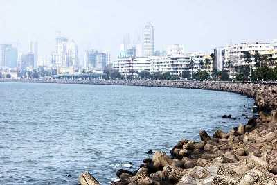

1. Marine Drive

Starting from the north of Nariman Point and ending at the famous Chowpatty beach, the Marine Drive is a 3km long arc shaped road along the sea coast of South Mumbai. The coast lines the Arabian sea and is the best place to watch the sunset in Mumbai.
Read more..